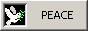
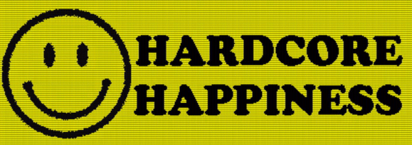
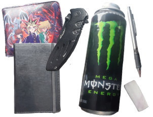
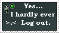
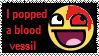
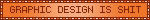
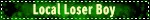
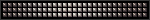

ABOUT ME!
hii! you can just call me lynx. i'm a 19 y/o artist from midwest USA, currently just figuring out what i want to do in life. i love cats and going to shows/raves. the art i dabble in ranges from sewing to clay, though i mainly just draw digitally. i strive to make people smile ☺︎



general
the colors green, orange, purple, and red!! chemistry to an extent, biology (molecular, micro, cell, mycology) though i haven't had the time to study it, cats, painting, drawing, clay, sewing, furriesmusic
happy hardcore, bubblegum pop, jazz, rock, industrial, etc. ROAR, Pierce the Veil, NIN, HEALTH, Machine Girl, Mitski, Glass Beach, The Cure, SOAD, hell just stalk my last.fmgames
Splatoon, Pokemon (B&W/B2&W2, ORAS, X&Y, PL:A), Cattails: Wildwood Story, Animal Crossing: New Horizonsfood
strawberries, waffles, lychees, grilled cheese, green tea, matcha, macaroons, coconut, marshmallows, and way more LMAOdaily loadout babyyy

PLURRH
peace, love, unity, respect, responsibility, and hope!
this movement has its roots in rave and EDM culture, but i think
it's something everybody should strive to follow ♡ i aspire to
live with plurrh in my heart. i really want to leave a positive
mark on the people's lives that i'm in and hopefully inspire them
to do the same to others.
i think spreading kindess and love is greatly needed, especially
in times like these. it doesn't take much to be nice to the people
around you. when i see bullies and bigots, i truly cannot
comprehend their way of living. all humans are beautiful and
worthy of compassion as long as they have the capability to return
it.






NOW
- watching: Pluribus
- playing: Splatoon 3
- listening to: ROAR
- reading: Five Dark Fates - Kendare Blake
- working on: christmas gifts